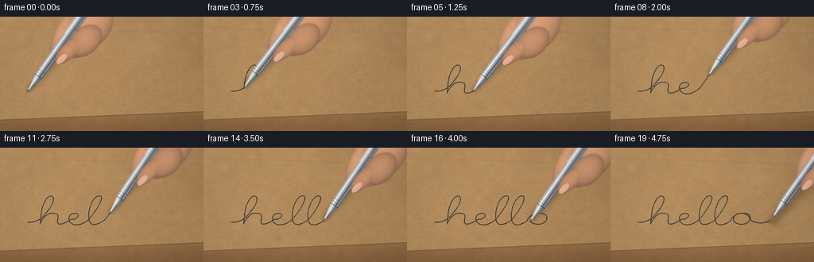
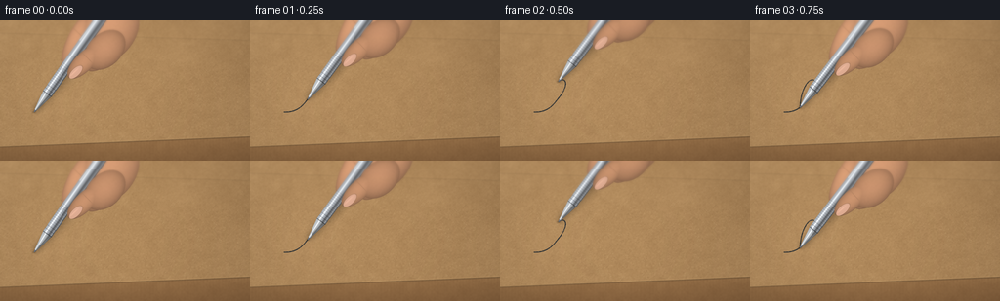

CODING AGENTS AS PIXEL WORLD MODELS
traex/GPT-6.1-Sol · mechanics_0047
点击播放 · 原生 RGB 像素
逐轮保存的候选
回放视频、检查图与代码变化。
每份候选均可单独播放。实际图片检查记录在下方工具轨迹中。
候选 01播放与检查图
点击播放 · 原生 RGB 像素


展开代码变化
--- 上一保存版本
+++ 本次保存版本
@@ -0,0 +1,243 @@
+from pathlib import Path
+import math, json
+import numpy as np
+from PIL import Image, ImageDraw, ImageFilter
+import artifact_io
+
+ROOT=Path(__file__).resolve().parent
+SPEC=json.loads((ROOT/'task_spec.json').read_text())
+W,H=SPEC['width'],SPEC['height']
+S=4
+WW,HH=W*S,H*S
+rng=np.random.default_rng(47218)
+Y,X=np.mgrid[:HH,:WW].astype(np.float32)
+X=(X+.5)/S; Y=(Y+.5)/S
+
+def noise_grid(w,h,blur=0):
+ arr=np.uint8(np.clip(rng.normal(127,35,(h,w)),0,255))
+ im=Image.fromarray(arr).resize((WW,HH),Image.Resampling.BICUBIC)
+ if blur: im=im.filter(ImageFilter.GaussianBlur(blur*S))
+ return (np.asarray(im).astype(np.float32)-127)/35
+
+fine=noise_grid(WW,HH,.12)
+mid=noise_grid(192,108,.35)
+coarse=noise_grid(35,22,1.5)
+large=noise_grid(9,6,5)
+# Warm, rough uncoated kraft paper: embedded pulp and uneven fiber relief.
+texture=1.9*fine+2.4*mid+1.75*coarse+1.4*large
+relief=np.gradient(mid)
+bump=(-relief[1]*2.6-relief[0]*3.2)
+light=9-0.054*X-.044*Y-3.8*((X-115)/180)**2
+base=np.stack([179+light+texture*1.0+bump,140+light*.86+texture*.94+bump,94+light*.65+texture*.78+bump],-1)
+# Fibers are mostly short, irregular strands, not a regular printed pattern.
+fiber=Image.new('RGBA',(WW,HH),(0,0,0,0)); fd=ImageDraw.Draw(fiber)
+for i in range(15500):
+ x,y=rng.uniform(0,WW),rng.uniform(0,HH)
+ length=rng.gamma(1.2,2.4)+.35
+ a=rng.normal(-.1,.9)
+ dx,dy=math.cos(a)*length,math.sin(a)*length
+ if rng.random()<.6: color=(108,79,47,int(rng.uniform(9,40)))
+ else: color=(236,207,158,int(rng.uniform(10,45)))
+ fd.line([(x,y),(x+dx*.6,y+dy*.3),(x+dx,y+dy)],fill=color,width=1 if i%3 else 2)
+baseim=Image.fromarray(np.uint8(np.clip(base,0,255))).convert('RGBA')
+baseim=Image.alpha_composite(baseim,fiber)
+base=np.asarray(baseim.convert('RGB')).astype(np.float32)
+# Front wall makes this clearly the top of an actual cardboard box.
+edge=130-.041*X
+front=Y>edge
+fronttex=texture*.8+2*np.sin(X*1.95)*np.exp(-(Y-edge)/8)
+wall=np.stack([147+fronttex-(Y-edge)*.85,109+fronttex*.9-(Y-edge)*.72,70+fronttex*.7-(Y-edge)*.5],-1)
+base=np.where(front[...,None],wall,base)
+crease=np.exp(-((Y-edge)/.60)**2)
+base=base*(1-.25*crease[...,None])
+rim=np.exp(-((Y-edge+1.0)/.42)**2)
+base+=rim[...,None]*np.array([12,10,7])
+# Subtle fold impression close to the distant upper border.
+fold=Y-(13+.029*X)
+base*= (1-.065*np.exp(-(fold/.65)**2))[...,None]
+base+=np.exp(-((fold+1.2)/1.1)**2)[...,None]*np.array([3.8,3.1,2.2])
+base=np.clip(base,0,255)
+
+# A single genuine cursive stroke. It is laid down only behind the ballpoint.
+segments=[
+((35,94),(43,94),(47,90),(51,83)),
+((51,83),(64,62),(56,57),(52,64)),
+((52,64),(46,75),(47,88),(46,96)),
+((46,96),(49,87),(54,80),(60,83)),
+((60,83),(65,85),(59,94),(63,96)),
+((63,96),(66,97),(71,93),(74,90)),
+((74,90),(79,91),(83,84),(78,83)),
+((78,83),(70,82),(70,95),(77,97)),
+((77,97),(82,98),(87,94),(90,90)),
+((90,90),(98,77),(104,61),(100,61)),
+((100,61),(94,59),(88,78),(90,91)),
+((90,91),(91,99),(97,98),(104,91)),
+((104,91),(112,78),(118,62),(114,61)),
+((114,61),(108,59),(102,80),(104,91)),
+((104,91),(105,99),(111,99),(118,92)),
+((118,92),(120,84),(128,80),(134,84)),
+((134,84),(139,90),(132,99),(125,96)),
+((125,96),(119,95),(119,85),(125,83)),
+((125,83),(130,81),(135,85),(135,90)),
+((135,90),(140,96),(147,96),(153,92)),
+]
+path=[]
+for seg in segments:
+ p=np.asarray(seg,float)
+ for t in np.linspace(0,1,90,endpoint=False):
+ q=(1-t)**3*p[0]+3*(1-t)**2*t*p[1]+3*(1-t)*t*t*p[2]+t**3*p[3]
+ q[0]=35+(q[0]-35)*1.40
+ path.append(q)
+path.append(np.array([35+(153-35)*1.4,92]))
+path=np.asarray(path)
+arc=np.r_[0,np.cumsum(np.linalg.norm(np.diff(path,axis=0),axis=1))]
+
+# Stable, textured microscopic ink transfer, with small pulp gaps.
+transfer=np.clip(.84+.13*mid+.065*fine,.50,1)
+ink_rgb=np.array([29,39,48],np.float32)
+
+def composite(arr,color,alpha):
+ return arr*(1-alpha[...,None])+color*alpha[...,None]
+
+# Anatomical rounded fingertips in the upper edge of this macro crop.
+# Their axes are expressed in pen coordinates, so the grip remains fixed.
+skin_noise=noise_grid(270,150,.5)
+def skin_layer(arr,u,v,parts,front=False):
+ zbest=np.full(u.shape,-10,dtype=np.float32)
+ chosen=np.zeros(u.shape,dtype=np.int8)
+ for k,(cu,cv,ra,rb,ang) in enumerate(parts):
+ ca,sa=math.cos(ang),math.sin(ang)
+ a=(u-cu)*ca+(v-cv)*sa
+ b=-(u-cu)*sa+(v-cv)*ca
+ rr=(a/ra)**2+(b/rb)**2
+ z=np.sqrt(np.maximum(0,1-rr))
+ candidate=np.where(rr<=1,z-.035*k,-10)
+ chosen=np.where(candidate>zbest,k,chosen)
+ zbest=np.maximum(zbest,candidate)
+ mask=zbest>-2
+ alpha=np.clip((zbest+.015)*18,0,1)*mask
+ # Rounded volume lit from the top left, subtle skin pores and warm bounce.
+ z=np.maximum(zbest,0)
+ lit=.71+.31*z+.0018*(u-80)-.0035*(v-7)
+ c=np.stack([207*lit+1.4*skin_noise,151*lit+1.0*skin_noise,113*lit+.9*skin_noise],-1)
+ # The thumbnail's oval is foreshortened and has a narrow cuticle.
+ if front:
+ a=(u-58)*.985+(v-11)*.173
+ b=-(u-58)*.173+(v-11)*.985
+ nr=(a/8.9)**2+(b/4.0)**2
+ na=np.clip((1-nr)*12,0,1)*mask
+ nail=np.stack([222+4*z,171+4*z,144+5*z],-1)
+ c=c*(1-na[...,None])+nail*na[...,None]
+ cut=np.exp(-((nr-1.02)/.10)**2)*.15*mask
+ c*=1-cut[...,None]
+ gl=np.exp(-((b+1.1)/.7)**2)*np.exp(-((a+1)/6)**4)*na
+ c+=gl[...,None]*np.array([16,13,12])
+ # Slight crease at the thumb joint.
+ cr=np.exp(-((u-77+.17*(v-11))/.38)**2)*np.exp(-((v-12)/6)**4)*.12
+ c*=1-cr[...,None]
+ else:
+ cr=np.exp(-((u-91+.13*v)/.45)**2)*np.exp(-((v+9)/8)**4)*.12
+ c*=1-cr[...,None]
+ return composite(arr,np.clip(c,0,255),alpha)
+
+frames=[]
+for k in range(SPEC['frames']):
+ progress=min(k/18,1)
+ # Arc length interpolation maintains a controlled, even writing speed.
+ distance=progress*arc[-1]
+ idx=int(np.searchsorted(arc,distance,side='right')-1)
+ idx=min(max(idx,0),len(path)-2)
+ f=(distance-arc[idx])/max(arc[idx+1]-arc[idx],1e-9)
+ contact=path[idx]*(1-f)+path[idx+1]*f
+ ink=Image.new('L',(WW,HH),0); d=ImageDraw.Draw(ink)
+ if k>0:
+ pts=np.vstack([path[:idx+1],contact])*S
+ # A ballpoint's imperfect, narrow permanent stroke.
+ d.line([tuple(p) for p in pts],fill=233,width=4,joint='curve')
+ for j in range(0,idx,9):
+ p=path[j]*S
+ d.ellipse((p[0]-1.8,p[1]-1.8,p[0]+1.8,p[1]+1.8),fill=238)
+ imask=np.asarray(ink,dtype=np.float32)/255*transfer
+ arr=composite(base.copy(),ink_rgb,imask)
+ # A narrow ink halo absorbed into the uncoated cardboard.
+ halo=np.asarray(ink.filter(ImageFilter.GaussianBlur(.26*S)),dtype=np.float32)/255*.075
+ arr=composite(arr,ink_rgb,halo)
+ lift=0 if k<=18 else 4.5
+ tip=contact+np.array([1.0*lift,-lift])
+ angle=math.radians(-54.5+1.6*math.sin(progress*math.pi*2)+.6*math.sin(progress*9))
+ ax,ay=math.cos(angle),math.sin(angle)
+ nx,ny=-ay,ax
+ dx,dy=X-tip[0],Y-tip[1]
+ u=dx*ax+dy*ay; v=dx*nx+dy*ny
+ # Pen and fingertips hover above the top face. Shadows widen with height.
+ su=(X-contact[0]+1.4)*ax+(Y-contact[1]-1.5-lift)*ay
+ sv=(X-contact[0]+1.4)*nx+(Y-contact[1]-1.5-lift)*ny
+ shadowcenter=.095*np.maximum(su,0)
+ softness=1.0+.050*np.maximum(su,0)+lift*.5
+ shadow=np.exp(-((sv-shadowcenter)/(3.3+softness))**2)*.22
+ shadow*=np.clip(su/7,0,1)*np.clip((160-su)/20,0,1)
+ arr*=1-shadow[...,None]
+ contactshade=np.exp(-((X-contact[0])**2/3.5+(Y-contact[1])**2/1.5))*(.24 if not lift else .08)
+ arr*=1-contactshade[...,None]
+ # The index finger and palm lie behind the silver barrel.
+ backparts=[(111,14,37,27,.10),(83,-8,28,8.6,-.20),(91,27,25,9,.30)]
+ arr=skin_layer(arr,u,v,backparts)
+ # Radius profile of the ballpoint, polished nose, collar and brushed barrel.
+ r=np.zeros_like(u)
+ r=np.where((u>=0)&(u<2.4),.42+.30*u,r)
+ r=np.where((u>=2.4)&(u<23),1.14+(u-2.4)*.196,r)
+ r=np.where((u>=23)&(u<27),5.40,r)
+ r=np.where((u>=27)&(u<31),5.27,r)
+ r=np.where((u>=31)&(u<158),5.55+.28*np.clip((u-31)/80,0,1),r)
+ r=np.where((u>=158)&(u<165),5.83*(165-u)/7,r)
+ alpha=np.clip((r-np.abs(v))*S+.5,0,1)*(r>0)
+ q=v/np.maximum(r,.01)
+ q=np.clip(q,-1,1)
+ z=np.sqrt(np.maximum(0,1-q*q))
+ # Reflections across a metallic cylinder: cold dark rim, bright strip,
+ # broad room reflection and a narrow glossy highlight.
+ metal=(106+63*z-43*q
+ +83*np.exp(-((q+.43)/.15)**2)
+ -61*np.exp(-((q-.33)/.19)**2)
+ +40*np.exp(-((q-.74)/.08)**2))
+ metal+=1.3*fine+.7*np.sin(u*11+q*2)
+ metal+=3.0*np.sin(u/17+progress*.15)
+ c=np.stack([metal*.96+4,metal*.99+4,metal*1.02+5],-1)
+ # Conical nib housing reflects tighter patches than the barrel.
+ cone=(u>2.4)&(u<23)
+ conevalue=118+65*z-45*q+74*np.exp(-((q+.32)/.12)**2)-52*np.exp(-((q-.49)/.21)**2)
+ conevalue+=4*np.sin(u*.49)
+ cone_rgb=np.stack([conevalue*.97+4,conevalue+3,conevalue*1.025+2],-1)
+ c=np.where(cone[...,None],cone_rgb,c)
+ # Machined grooves around the silver grip.
+ rings=(u>=32)&(u<=59)
+ groove=np.exp(-(np.sin((u-32)*math.pi/2.4)/.25)**2)*rings
+ c*=1-.24*groove[...,None]
+ nextshine=np.exp(-(np.sin((u-32-.35)*math.pi/2.4)/.27)**2)*rings
+ c+=nextshine[...,None]*13
+ seam=(np.exp(-((u-23.2)/.34)**2)*.56+np.exp(-((u-27.1)/.24)**2)*.33+np.exp(-((u-30.9)/.22)**2)*.36)
+ c*=1-seam[...,None]
+ # Dark tip and the minute polished steel writing ball.
+ nib=u<2.5
+ nibval=38+85*z+60*np.exp(-((q+.45)/.15)**2)
+ nib_rgb=np.stack([nibval*.90,nibval*.95,nibval+4],-1)
+ c=np.where(nib[...,None],nib_rgb,c)
+ arr=composite(arr,np.clip(c,0,255),alpha)
+ # A spring pocket clip, a recognizable pen detail higher on the barrel.
+ clipcenter=-4.45+.45*np.sin((u-91)/52*math.pi)
+ clipmask=np.clip((.8-np.abs(v-clipcenter))*S+.3,0,1)*((u>87)&(u<145))
+ clipcolor=np.stack([192+28*np.cos((v-clipcenter)*2),200+25*np.cos((v-clipcenter)*2),205+25*np.cos((v-clipcenter)*2)],-1)
+ arr=composite(arr,clipcolor,clipmask)
+ # Foreground thumb overlaps the barrel at the grip, never the writing tip.
+ arr=skin_layer(arr,u,v,[(72,12,23,9.6,.17),(94,22,24,17,.2)],front=True)
+ # Optical macro depth: contact and fresh ink stay sharp, distant hand soft.
+ rgb=Image.fromarray(np.uint8(np.clip(arr,0,255)))
+ blurred=np.asarray(rgb.filter(ImageFilter.GaussianBlur(1.0*S)),dtype=np.float32)
+ far=np.clip((58-Y)/50,0,1)*.82+np.clip((Y-116)/40,0,.40)
+ arr=arr*(1-far[...,None])+blurred*far[...,None]
+ vignette=1-.10*((X-128)/170)**2-.035*((Y-80)/100)**2
+ arr*=vignette[...,None]
+ final=Image.fromarray(np.uint8(np.clip(arr,0,255))).resize((W,H),Image.Resampling.LANCZOS)
+ frames.append(np.asarray(final))
+artifact_io.save(np.stack(frames).astype(np.uint8),ROOT)
+print('Saved',len(frames),'RGB frames.')
可观测工具轨迹
实际执行的命令与返回图片。
命令 1exit 0
/bin/bash -lc 'ls -la && cat prompt.txt && cat GENERATION_RULES.md && cat task_spec.json'
命令 2exit 0
/bin/bash -lc "cat artifact_io.py && python - <<'PY'
import PIL, numpy
print('PIL/numpy available')
PY"命令 3exit 0
/bin/bash -lc "cat > generate.py <<'PY'
from pathlib import Path
import math, json
import numpy as np
from PIL import Image, ImageDraw, ImageFilter
import artifact_io
ROOT=Path(__file__).resolve().parent
SPEC=json.loads((ROOT/'task_spec.json').read_text())
W,H=SPEC['width'],SPEC['height']
S=4
WW,HH=W*S,H*S
rng=np.random.default_rng(47218)
Y,X=np.mgrid[:HH,:WW].astype(np.float32)
X=(X+.5)/S; Y=(Y+.5)/S
def noise_grid(w,h,blur=0):
arr=np.uint8(np.clip(rng.normal(127,35,(h,w)),0,255))
im=Image.fromarray(arr).resize((WW,HH),Image.Resampling.BICUBIC)
if blur: im=im.filter(ImageFilter.GaussianBlur(blur*S))
return (np.asarray(im).astype(np.float32)-127)/35
fine=noise_grid(WW,HH,.12)
mid=noise_grid(192,108,.35)
coarse=noise_grid(35,22,1.5)
large=noise_grid(9,6,5)
# Warm, rough uncoated kraft paper: embedded pulp and uneven fiber relief.
texture=1.9*fine+2.4*mid+1.75*coarse+1.4*large
relief=np.gradient(mid)
bump=(-relief[1]*2.6-relief[0]*3.2)
light=9-0.054*X-.044*Y-3.8*((X-115)/180)**2
base=np.stack([179+light+texture*1.0+bump,140+light*.86+texture*.94+bump,94+light*.65+texture*.78+bump],-1)
# Fibers are mostly short, irregular strands, not a regular printed pattern.
fiber=Image.new('RGBA',(WW,HH),(0,0,0,0)); fd=ImageDraw.Draw(fiber)
for i in range(15500):
x,y=rng.uniform(0,WW),rng.uniform(0,HH)
length=rng.gamma(1.2,2.4)+.35
a=rng.normal(-.1,.9)
dx,dy=math.cos(a)*length,math.sin(a)*length
if rng.random()<.6: color=(108,79,47,int(rng.uniform(9,40)))
else: color=(236,207,158,int(rng.uniform(10,45)))
fd.line([(x,y),(x+dx*.6,y+dy*.3),(x+dx,y+dy)],fill=color,width=1 if i%3 else 2)
baseim=Image.fromarray(np.uint8(np.clip(base,0,255))).convert('RGBA')
baseim=Image.alpha_composite(baseim,fiber)
base=np.asarray(baseim.convert('RGB')).astype(np.float32)
# Front wall makes this clearly the top of an actual cardboard box.
edge=130-.041*X
front=Y>edge
fronttex=texture*.8+2*np.sin(X*1.95)*np.exp(-(Y-edge)/8)
wall=np.stack([147+fronttex-(Y-edge)*.85,109+fronttex*.9-(Y-edge)*.72,70+fronttex*.7-(Y-edge)*.5],-1)
base=np.where(front[...,None],wall,base)
crease=np.exp(-((Y-edge)/.60)**2)
base=base*(1-.25*crease[...,None])
rim=np.exp(-((Y-edge+1.0)/.42)**2)
base+=rim[...,None]*np.array([12,10,7])
# Subtle fold impression close to the distant upper border.
fold=Y-(13+.029*X)
base*= (1-.065*np.exp(-(fold/.65)**2))[...,None]
base+=np.exp(-((fold+1.2)/1.1)**2)[...,None]*np.array([3.8,3.1,2.2])
base=np.clip(base,0,255)
# A single genuine cursive stroke. It is laid down only behind the ballpoint.
segments=[
((35,94),(43,94),(47,90),(51,83)),
((51,83),(64,62),(56,57),(52,64)),
((52,64),(46,75),(47,88),(46,96)),
((46,96),(49,87),(54,80),(60,83)),
((60,83),(65,85),(59,94),(63,96)),
((63,96),(66,97),(71,93),(74,90)),
((74,90),(79,91),(83,84),(78,83)),
((78,83),(70,82),(70,95),(77,97)),
((77,97),(82,98),(87,94),(90,90)),
((90,90),(98,77),(104,61),(100,61)),
((100,61),(94,59),(88,78),(90,91)),
((90,91),(91,99),(97,98),(104,91)),
((104,91),(112,78),(118,62),(114,61)),
((114,61),(108,59),(102,80),(104,91)),
((104,91),(105,99),(111,99),(118,92)),
((118,92),(120,84),(128,80),(134,84)),
((134,84),(139,90),(132,99),(125,96)),
((125,96),(119,95),(119,85),(125,83)),
((125,83),(130,81),(135,85),(135,90)),
((135,90),(140,96),(147,96),(153,92)),
]
path=[]
for seg in segments:
p=np.asarray(seg,float)
for t in np.linspace(0,1,90,endpoint=False):
q=(1-t)**3*p[0]+3*(1-t)**2*t*p[1]+3*(1-t)*t*t*p[2]+t**3*p[3]
q[0]=35+(q[0]-35)*1.40
path.append(q)
path.append(np.array([35+(153-35)*1.4,92]))
path=np.asarray(path)
arc=np.r_[0,np.cumsum(np.linalg.norm(np.diff(path,axis=0),axis=1))]
# Stable, textured microscopic ink transfer, with small pulp gaps.
transfer=np.clip(.84+.13*mid+.065*fine,.50,1)
ink_rgb=np.array([29,39,48],np.float32)
def composite(arr,color,alpha):
return arr*(1-alpha[...,None])+color*alpha[...,None]
# Anatomical rounded fingertips in the upper edge of this macro crop.
# Their axes are expressed in pen coordinates, so the grip remains fixed.
skin_noise=noise_grid(270,150,.5)
def skin_layer(arr,u,v,parts,front=False):
zbest=np.full(u.shape,-10,dtype=np.float32)
chosen=np.zeros(u.shape,dtype=np.int8)
for k,(cu,cv,ra,rb,ang) in enumerate(parts):
ca,sa=math.cos(ang),math.sin(ang)
a=(u-cu)*ca+(v-cv)*sa
b=-(u-cu)*sa+(v-cv)*ca
rr=(a/ra)**2+(b/rb)**2
z=np.sqrt(np.maximum(0,1-rr))
candidate=np.where(rr<=1,z-.035*k,-10)
chosen=np.where(candidate>zbest,k,chosen)
zbest=np.maximum(zbest,candidate)
mask=zbest>-2
alpha=np.clip((zbest+.015)*18,0,1)*mask
# Rounded volume lit from the top left, subtle skin pores and warm bounce.
z=np.maximum(zbest,0)
lit=.71+.31*z+.0018*(u-80)-.0035*(v-7)
c=np.stack([207*lit+1.4*skin_noise,151*lit+1.0*skin_noise,113*lit+.9*skin_noise],-1)
# The thumbnail's oval is foreshortened and has a narrow cuticle.
if front:
a=(u-58)*.985+(v-11)*.173
b=-(u-58)*.173+(v-11)*.985
nr=(a/8.9)**2+(b/4.0)**2
na=np.clip((1-nr)*12,0,1)*mask
nail=np.stack([222+4*z,171+4*z,144+5*z],-1)
c=c*(1-na[...,None])+nail*na[...,None]
cut=np.exp(-((nr-1.02)/.10)**2)*.15*mask
c*=1-cut[...,None]
gl=np.exp(-((b+1.1)/.7)**2)*np.exp(-((a+1)/6)**4)*na
c+=gl[...,None]*np.array([16,13,12])
# Slight crease at the thumb joint.
cr=np.exp(-((u-77+.17*(v-11))/.38)**2)*np.exp(-((v-12)/6)**4)*.12
c*=1-cr[...,None]
else:
cr=np.exp(-((u-91+.13*v)/.45)**2)*np.exp(-((v+9)/8)**4)*.12
c*=1-cr[...,None]
return composite(arr,np.clip(c,0,255),alpha)
frames=[]
for k in range(SPEC['frames']):
progress=min(k/18,1)
# Arc length interpolation maintains a controlled, even writing speed.
distance=progress*arc[-1]
idx=int(np.searchsorted(arc,distance,side='right')-1)
idx=min(max(idx,0),len(path)-2)
f=(distance-arc[idx])/max(arc[idx+1]-arc[idx],1e-9)
contact=path[idx]*(1-f)+path[idx+1]*f
ink=Image.new('L',(WW,HH),0); d=ImageDraw.Draw(ink)
if k>0:
pts=np.vstack([path[:idx+1],contact])*S
# A ballpoint's imperfect, narrow permanent stroke.
d.line([tuple(p) for p in pts],fill=233,width=4,joint='curve')
for j in range(0,idx,9):
p=path[j]*S
d.ellipse((p[0]-1.8,p[1]-1.8,p[0]+1.8,p[1]+1.8),fill=238)
imask=np.asarray(ink,dtype=np.float32)/255*transfer
arr=composite(base.copy(),ink_rgb,imask)
# A narrow ink halo absorbed into the uncoated cardboard.
halo=np.asarray(ink.filter(ImageFilter.GaussianBlur(.26*S)),dtype=np.float32)/255*.075
arr=composite(arr,ink_rgb,halo)
lift=0 if k<=18 else 4.5
tip=contact+np.array([1.0*lift,-lift])
angle=math.radians(-54.5+1.6*math.sin(progress*math.pi*2)+.6*math.sin(progress*9))
ax,ay=math.cos(angle),math.sin(angle)
nx,ny=-ay,ax
dx,dy=X-tip[0],Y-tip[1]
u=dx*ax+dy*ay; v=dx*nx+dy*ny
# Pen and fingertips hover above the top face. Shadows widen with height.
su=(X-contact[0]+1.4)*ax+(Y-contact[1]-1.5-lift)*ay
sv=(X-contact[0]+1.4)*nx+(Y-contact[1]-1.5-lift)*ny
shadowcenter=.095*np.maximum(su,0)
softness=1.0+.050*np.maximum(su,0)+lift*.5
shadow=np.exp(-((sv-shadowcenter)/(3.3+softness))**2)*.22
shadow*=np.clip(su/7,0,1)*np.clip((160-su)/20,0,1)
arr*=1-shadow[...,None]
contactshade=np.exp(-((X-contact[0])**2/3.5+(Y-contact[1])**2/1.5))*(.24 if not lift else .08)
arr*=1-contactshade[...,None]
# The index finger and palm lie behind the silver barrel.
backparts=[(111,14,37,27,.10),(83,-8,28,8.6,-.20),(91,27,25,9,.30)]
arr=skin_layer(arr,u,v,backparts)
# Radius profile of the ballpoint, polished nose, collar and brushed barrel.
r=np.zeros_like(u)
r=np.where((u>=0)&(u<2.4),.42+.30*u,r)
r=np.where((u>=2.4)&(u<23),1.14+(u-2.4)*.196,r)
r=np.where((u>=23)&(u<27),5.40,r)
r=np.where((u>=27)&(u<31),5.27,r)
r=np.where((u>=31)&(u<158),5.55+.28*np.clip((u-31)/80,0,1),r)
r=np.where((u>=158)&(u<165),5.83*(165-u)/7,r)
alpha=np.clip((r-np.abs(v))*S+.5,0,1)*(r>0)
q=v/np.maximum(r,.01)
q=np.clip(q,-1,1)
z=np.sqrt(np.maximum(0,1-q*q))
# Reflections across a metallic cylinder: cold dark rim, bright strip,
# broad room reflection and a narrow glossy highlight.
metal=(106+63*z-43*q
+83*np.exp(-((q+.43)/.15)**2)
-61*np.exp(-((q-.33)/.19)**2)
+40*np.exp(-((q-.74)/.08)**2))
metal+=1.3*fine+.7*np.sin(u*11+q*2)
metal+=3.0*np.sin(u/17+progress*.15)
c=np.stack([metal*.96+4,metal*.99+4,metal*1.02+5],-1)
# Conical nib housing reflects tighter patches than the barrel.
cone=(u>2.4)&(u<23)
conevalue=118+65*z-45*q+74*np.exp(-((q+.32)/.12)**2)-52*np.exp(-((q-.49)/.21)**2)
conevalue+=4*np.sin(u*.49)
cone_rgb=np.stack([conevalue*.97+4,conevalue+3,conevalue*1.025+2],-1)
c=np.where(cone[...,None],cone_rgb,c)
# Machined grooves around the silver grip.
rings=(u>=32)&(u<=59)
groove=np.exp(-(np.sin((u-32)*math.pi/2.4)/.25)**2)*rings
c*=1-.24*groove[...,None]
nextshine=np.exp(-(np.sin((u-32-.35)*math.pi/2.4)/.27)**2)*rings
c+=nextshine[...,None]*13
seam=(np.exp(-((u-23.2)/.34)**2)*.56+np.exp(-((u-27.1)/.24)**2)*.33+np.exp(-((u-30.9)/.22)**2)*.36)
c*=1-seam[...,None]
# Dark tip and the minute polished steel writing ball.
nib=u<2.5
nibval=38+85*z+60*np.exp(-((q+.45)/.15)**2)
nib_rgb=np.stack([nibval*.90,nibval*.95,nibval+4],-1)
c=np.where(nib[...,None],nib_rgb,c)
arr=composite(arr,np.clip(c,0,255),alpha)
# A spring pocket clip, a recognizable pen detail higher on the barrel.
clipcenter=-4.45+.45*np.sin((u-91)/52*math.pi)
clipmask=np.clip((.8-np.abs(v-clipcenter))*S+.3,0,1)*((u>87)&(u<145))
clipcolor=np.stack([192+28*np.cos((v-clipcenter)*2),200+25*np.cos((v-clipcenter)*2),205+25*np.cos((v-clipcenter)*2)],-1)
arr=composite(arr,clipcolor,clipmask)
# Foreground thumb overlaps the barrel at the grip, never the writing tip.
arr=skin_layer(arr,u,v,[(72,12,23,9.6,.17),(94,22,24,17,.2)],front=True)
# Optical macro depth: contact and fresh ink stay sharp, distant hand soft.
rgb=Image.fromarray(np.uint8(np.clip(arr,0,255)))
blurred=np.asarray(rgb.filter(ImageFilter.GaussianBlur(1.0*S)),dtype=np.float32)
far=np.clip((58-Y)/50,0,1)*.82+np.clip((Y-116)/40,0,.40)
arr=arr*(1-far[...,None])+blurred*far[...,None]
vignette=1-.10*((X-128)/170)**2-.035*((Y-80)/100)**2
arr*=vignette[...,None]
final=Image.fromarray(np.uint8(np.clip(arr,0,255))).resize((W,H),Image.Resampling.LANCZOS)
frames.append(np.asarray(final))
artifact_io.save(np.stack(frames).astype(np.uint8),ROOT)
print('Saved',len(frames),'RGB frames.')
PY
python generate.py"命令 4exit 0
/bin/bash -lc "python - <<'PY'
from pathlib import Path
import numpy as np
p=Path('.')
a=np.load(p/'pixels.npz')['pixels']
assert a.shape==(144,256,20)
assert len(list((p/'frames').glob('*.png')))==20
for f in ['generate.py','pixels.npz','index.html','inspection.png','transition_check.png']:
assert (p/f).is_file()
print('Verified all output artifacts and 20 frames at 256Ã144.')
PY"视觉工具实际返回图片 1

保存候选 1 份；完成命令 4 次；可验证图片返回 1 张。原始 API 响应与完整日志保留在本地。